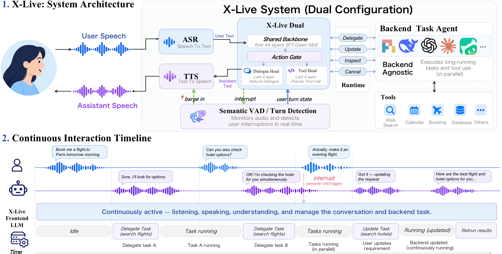
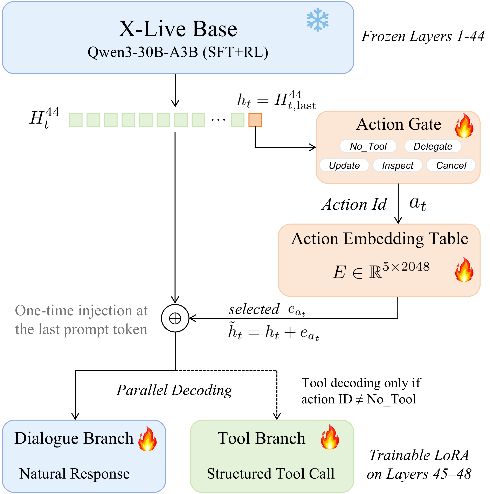

Conversation continues while tasks run
Users can keep talking, add requirements, check progress, or interrupt while a task runs in the background.
1MoE Key Lab of Artificial Intelligence, X-LANCE Lab, Shanghai Jiao Tong University
2Shanghai Innovation Institute
Real-time full-duplex voice agents aim to enable natural and continuous human-machine interaction. However, maintaining fluent conversation while executing complex, long-running tasks remains a key challenge. Existing dual-agent systems often coordinate natural-language responses and structured tool control within a shared generation process, potentially disrupting conversational continuity and timely task execution. To address this challenge, we propose X-Live, a full-duplex voice agent system that supports continuous conversation and asynchronous task execution.
At its core, X-Live Dual introduces an action-gated dual-branch architecture that combines a shared semantic backbone, lightweight action gate, and action-conditioned generation to separate dialogue responses from structured tool calls. This design enables concurrent dialogue generation and task control. We further introduce AsyncVoiceBench, a benchmark comprising 100 asynchronous interaction scenarios. On Full-Duplex-Bench v3, X-Live Dual achieves the best task performance among open-source systems and matches GPT-Realtime on tool selection, argument accuracy, and Pass@1. On AsyncVoiceBench, it more than doubles the Pass@1 of the strongest baseline, highlighting the effectiveness of decoupling dialogue generation and tool control through the proposed dual-branch architecture. Code, models, and benchmark are available at GitHub.
Trouble watching on YouTube? Watch on SJTU Cloud Drive.
The user asks in English for flights from Shanghai to Seattle and hotels in Seattle. X-Live responds naturally while delegating the searches to the backend.
Trouble watching on YouTube? Watch on SJTU Cloud Drive.
The same travel planning scenario in Chinese. The user asks for flights from Shanghai to Seattle and hotels in Seattle, while X-Live keeps the conversation going during the background searches.
Trouble watching on YouTube? Watch on SJTU Cloud Drive.
X-Live explains Newton's three laws using a whiteboard. During the second law, the user says they want to stop studying and go out, demonstrating interruption and a change of topic.
Trouble watching on YouTube? Watch on SJTU Cloud Drive.
The user requests a speech outline and an event registration page, then cancels the registration page. X-Live manages the tasks separately and delivers the completed speech outline.


Users can keep talking, add requirements, check progress, or interrupt while a task runs in the background.
An Action Gate selects an action. Separate LoRA branches generate dialogue and structured calls for delegate, update, inspect, and cancel.
The backend reports task status and results to the runtime. The dialogue model uses these events to answer the user.
Real-time tool use and full-duplex interaction.
| System | ToolSel ↑ | ArgAcc ↑ | RespQual ↑ | Pass@1 ↑ | Take-turn ↑ | Interrupt ↓ | Filler ↓ |
|---|---|---|---|---|---|---|---|
| Closed-source | |||||||
| GPT-Realtime | 0.876 | 0.680 | 0.792 | 0.600 | 96.0 | 13.5 | 16.9 |
| Gemini Live 3.1 | 0.817 | 0.588 | 0.718 | 0.540 | 78.0 | 19.2 | 31.7 |
| Cascaded | 0.803 | 0.562 | 0.600 | 0.450 | 100.0 | 33.0 | 26.9 |
| Grok | 0.797 | 0.542 | 0.617 | 0.430 | 94.0 | 25.5 | 44.3 |
| Gemini Live 2.5 | 0.786 | 0.593 | 0.554 | 0.490 | 92.0 | 14.1 | 8.9 |
| Open-source | |||||||
| Gander | 0.759 | 0.503 | 0.490 | 0.400 | 100.0 | 8.0 | 51.6 |
| Ultravox v0.7 | 0.794 | 0.513 | 0.510 | 0.410 | 96.0 | 47.9 | 88.0 |
| Realtime-Venus-Audio | 0.820 | 0.522 | — | 0.420 | — | — | — |
| Realtime-Venus-Omni | 0.860 | 0.531 | — | 0.430 | — | — | — |
| X-Live System (Base)Ours | 0.854 | 0.593 | 0.540 | 0.520 | 100.0 | 8.0 | 98.9 |
| X-Live System (Dual)Ours | 0.887 | 0.680 | 0.680 | 0.600 | 100.0 | 7.0 | 93.5 |
Take-turn, Interrupt, and Filler are percentages.
Task execution during ongoing conversation.
| System | ToolSel ↑ | ArgAcc ↑ | Pass@1 ↑ | RespQual ↑ | Natural ↑ | FU-Ans ↑ | FU-Lat ↓ |
|---|---|---|---|---|---|---|---|
| Gander | 0.360 | 0.327 | 0.180 | 0.189 | 0.274 | 34.9 | 4.55 |
| Venus-Audio | 0.649 | 0.637 | 0.230 | 0.026 | 0.074 | 4.7 | 2.21 |
| Venus-Omni | 0.566 | 0.496 | 0.220 | 0.048 | 0.103 | 3.3 | 19.98 |
| X-Live System (Base)Ours | 0.750 | 0.732 | 0.370 | 0.324 | 0.583 | 78.1 | 1.65 |
| X-Live System (Dual)Ours | 0.808 | 0.730 | 0.470 | 0.471 | 0.618 | 68.4 | 2.24 |
↑ higher is better · ↓ lower is better · FU-Ans in %, FU-Lat in seconds
@misc{xlive2026,
title = {X-Live: Decoupling Speaking and Acting in Real-Time Voice Agent},
author = {Hengtao Wu and Zhanxun Liu and Ningkai Wu and Yifan Duan and Xie Chen},
year = {2026},
eprint = {comming soon.},
archivePrefix= {arXiv},
primaryClass = {cs.SD},
note = {Preprint}
}
Follow the repository instructions to run the model, speech services, and task backend locally.